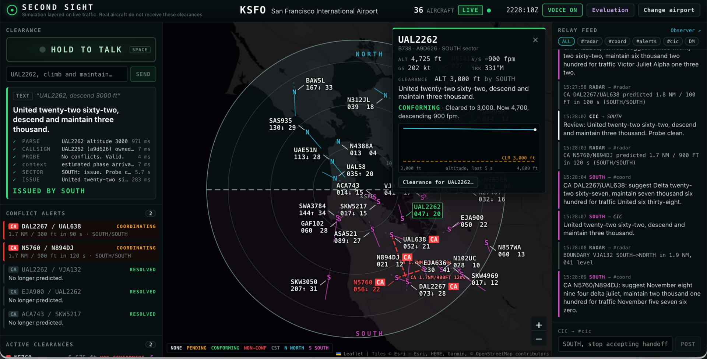

<section id="demo-good" data-transition="fade" style="background:#0B1622;color:#F3F1EA;font-family:'IBM Plex Sans', Arial, sans-serif;padding:56px 96px;display:flex;flex-direction:column;gap:20px">
<div style="display:flex;align-items:center;gap:20px">
<p style="font-family:'JetBrains Mono', 'Courier New', monospace;font-size:24px;font-weight:600;letter-spacing:3px;color:#0B1622;background:#7CE38B;border-radius:999px;padding:6px 20px">DEMO · ISSUED</p>
<h2 style="font-family:'Space Grotesk', Arial, sans-serif;font-size:48px;font-weight:700;line-height:1.1">“United twenty-two sixty-two, descend and maintain three thousand.”</h2>
</div>

<aside>A good clearance. I say “United twenty-two sixty-two, descend and maintain three thousand.” It’s parsed, the probe finds no conflict, the SOUTH agent reviews it over Relay and issues it, and the aircraft goes green: conforming, because it’s already descending.</aside>
</section>
